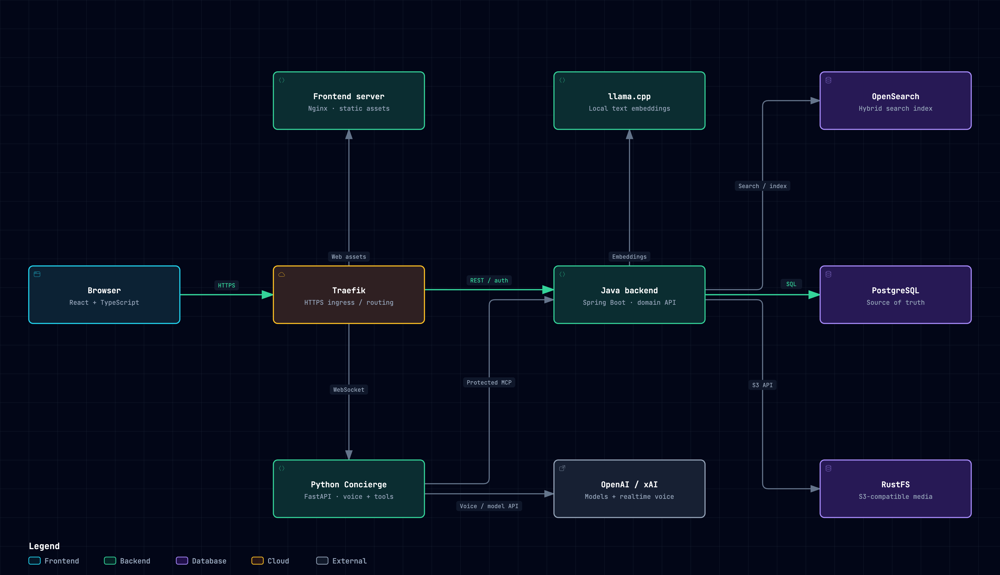
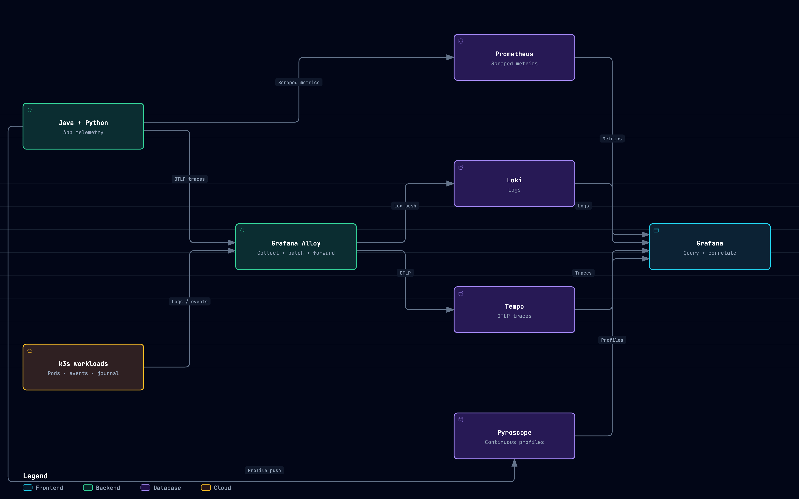

01 / Application
From a request to a movie.
Follow web and voice requests through the frontend, the domain backend, the agent and the data layer.
Explore application architecture →Behind the screen / Built by Niklas Tiede
A movie discovery app, from the first voice request to the infrastructure that keeps it running. Explore how the pieces fit together.
01 / Explore the system
Interactive maps of the application and the signals that help explain its behaviour.

Follow web and voice requests through the frontend, the domain backend, the agent and the data layer.
Explore application architecture →
See where metrics, logs, traces and profiles originate, where they go and how Grafana brings them together.
Explore observability →The next addition will be a curated view of real operating metrics, with context for what each measurement tells us.
Public dashboard access is not available yet.
I write about software development and the lessons from building and running projects on The Coding Lab. Future Popcorn Society articles will be collected here.
Visit The Coding Lab ↗